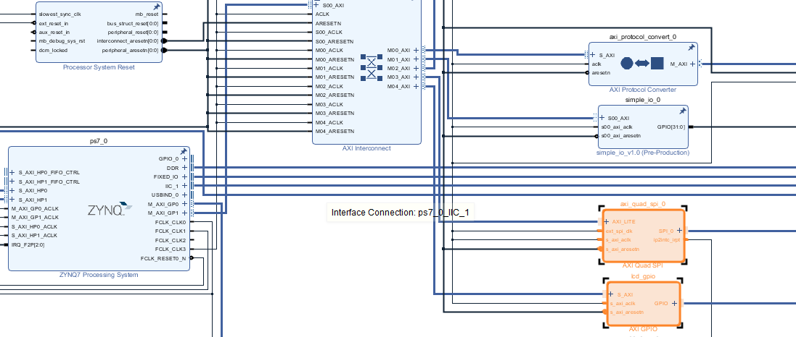
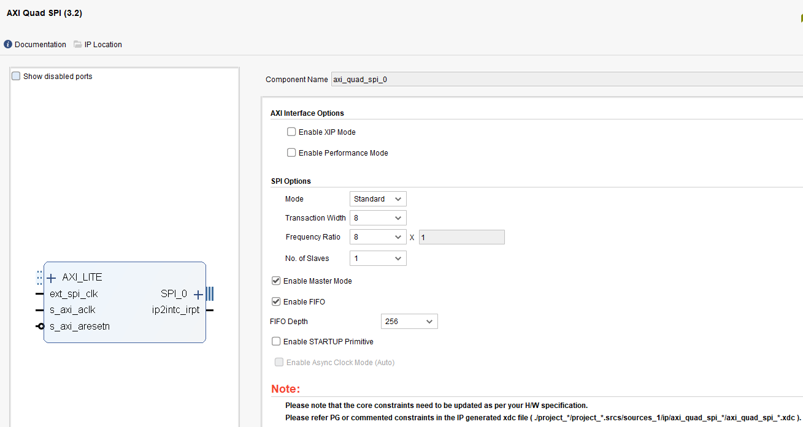
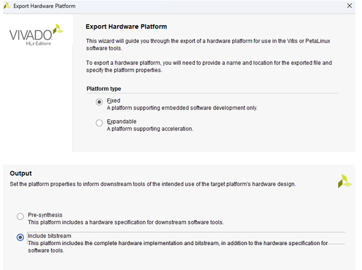
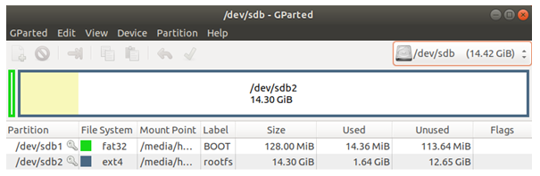

LVGL on PYNQ-Z2 Episode 1: Creating a Linux Image with SPI LCD Driver
Hello! In this article series, we will experiment with the LVGL (Light and Versatile Graphics Library) graphics library on the PYNQ-Z2 board which uses a Zynq-7000 chip. We will display output to a Raspberry Pi SPI LCD screen (using the ILI9486 driver chip).
This article will be split into 2 episodes. In this first episode, we will focus on system preparation, from designing Hardware on FPGA, creating a Petalinux Image, writing a Framebuffer driver for the LCD screen, to building a ready-to-use SD Card Image.
In the 2nd episode, we will look at how to compile LVGL and run a sample application on the PYNQ-Z2 board that we have prepared.
Design Concept
The core of this experiment is connecting an SPI LCD screen to the PYNQ-Z2 board. But instead of using the existing SPI Controller in the PS (Processing System) side, we will choose to use an SPI Controller created in the PL (Programmable Logic) side, which is the FPGA part. We will use the Xilinx AXI Quad SPI IP Core.
From checking the ILI9486 screen Datasheet, it is found to support a maximum SPI speed at 15MHz. Therefore in this experiment, we will set the SPI clock speed to 12.5MHz, which is an appropriate and sufficient speed for usage.
An overview of the architecture we will build is as follows:
graph TD
subgraph "Zynq-7000 SoC"
subgraph "PS (Processing System - ARM Cortex-A9)"
PS1["LVGL Application in Userspace"]
end
subgraph "Linux Kernel Space"
PS1 -- Pixel Data --> FB_DEV["/dev/fb0"]
FB_DEV --> ili9486_driver["ILI9486 Framebuffer Driver"]
ili9486_driver --> SPI_Framework["Linux SPI Framework"]
ili9486_driver --> GPIO_Framework["Linux GPIO Framework"]
end
SPI_Framework --> SPI_IP
GPIO_Framework --> GPIO_IP
subgraph "PL (Programmable Logic - FPGA)"
SPI_IP["AXI Quad SPI IP"]
GPIO_IP["AXI GPIO IP"]
end
end
subgraph "External Hardware"
SPI_IP -- SPI Bus --> LCD_module["ILI9486 LCD Module"]
GPIO_IP -- Control_Signals --> LCD_module
end
The operation is that LVGL will send Pixel data (Framebuffer) to the /dev/fb0 driver that we created. Then our driver will act to send this data through the AXI SPI located in the PL to the LCD screen, relying on AXI GPIO to control other signals such as Data/Command (DC), Reset, and Backlight (BL).
The sequence of sending Pixel data will follow this diagram:
sequenceDiagram
participant App as LVGL App (Userspace)
participant Kernel as Linux Kernel (VFS)
participant FB_Driver as ili9486_fb Driver
participant SPI_Core as Linux SPI Core
participant HW as SPI Hardware (FPGA IP)
loop On Screen Update
App->>Kernel: write(fb_dev, pixel_data)
Kernel->>FB_Driver: ili9486_fb_write()
FB_Driver->>SPI_Core: spi_sync() / spi_transfer()
SPI_Core->>HW: Send data through SPI Bus
end
System Creation Steps
We will divide the creation steps into 3 main parts: FPGA side design, Linux Image creation with Petalinux, and SD Card preparation.
1. FPGA Side Design with Vivado
In this step, we will create a Block Design in Vivado to add the necessary IP Cores for communication with the LCD screen.
- Add IP Cores: Open your Vivado project, and in Block Design add the
AXI Quad SPIandAXI GPIOIP Cores.
- Configure AXI Quad SPI: Configure the IP Core according to the image below, especially selecting the operation mode to be SPI Master.

- Export Hardware: After designing, synthesizing, and implementing is complete, do an Export Hardware Platform by selecting "Include bitstream". We will get an
.xsafile, which will be used in the next step.
2. Embedded Linux Creation with Petalinux
In this step, we will use Petalinux Tools to create a Linux operating system that has the driver for our LCD screen.
2.1 Environment Preparation
Install required packages:
$ sudo apt update
$ sudo apt upgrade
$ sudo apt install htop vim openssh-server iproute2 gcc g++ net-tools libncurses5-dev zlib1g:i386 libssl-dev flex bison libselinux1 xterm autoconf libtool texinfo zlib1g-dev gcc-multilib build-essential screen pax gawk python3 python3-pexpect python3-pip python3-git python3-jinja2 xz-utils debianutils iputils-ping libegl1-mesa libsdl1.2-dev pylint3 cpio chrpath socat python
$ pip3 install --upgrade pip
$ sudo apt-get install tftp
$ sudo apt-get install tftpd-hpa
$ sudo apt-get install gparted
$ sudo apt install device-tree-compiler
Install Petalinux (example uses version 2019.2):
$ mkdir ~/petalinux_2019
$ mv ~/Downloads/petalinux-v2019.2-final-installer.run ~/petalinux_2019/.
$ cd ~/petalinux_2019
$ chmod +x petalinux-v2019.2-final-installer.run
$ ./petalinux-v2019.2-final-installer.run
(During installation, press q to skip the text pages)
Change default Shell to Bash:
To let Petalinux work correctly, we must change the Default Shell from dash to bash
$ chsh -s /bin/bash
After that, reboot and run the command:
$ sudo dpkg-reconfigure dash
In the screen that appears, select No
2.2 Petalinux Project Creation
Create project:
First, prepare the .xsa file obtained from Vivado in an easily accessible location. Here it's on the Desktop.
hong@ubuntu:~$ ls ~/Desktop/xsa/
prj_top.xsa
Then, start creating the Petalinux project by referencing the Hardware Definition File (.xsa)
$ source ~/petalinux_2019/settings.sh
$ cd ~/
$ petalinux-create --type project --template zynq --name pynq_z2
$ cd pynq_z2/
$ petalinux-config --get-hw-description=~/Desktop/xsa
Configure project: In the menu that appears, configure as follows:
DTG Settings -> Kernel Bootargs -> disable generate boot args automatically
Then in theuser set kernel bootargsfield, put this value:
console=ttyPS0,115200 root=/dev/mmcblk0p2 rw earlyprintk quiet rootfstype=ext4 rootwait cma=256MImage Packaging Configuration --> Root filesystem typechange toEXT4 (SD/eMMC/SATA/USB)- Disable
[ ] Copy final images to tftpbootif not using NFS Boot
Configure Kernel:
$ petalinux-config -c kernel
In the Kernel Configuration menu, enable required drivers such as USB Support
Device Drivers -> USB support -> [*]USB announce new devices
Add Custom Driver Module: We will create a Kernel Module for our Framebuffer driver
$ petalinux-create -t modules --name fb-ili9486 --enable
Then, edit the driver's source code file
$ gedit project-spec/meta-user/recipes-modules/fb-ili9486/files/fb-ili9486.c
And put the code below into the file:
// SPDX-License-Identifier: GPL-2.0
/*
* fb-ili9486.c (V2)
* - mmap + deferred IO
* - ARM fbcon safe ordering
*/
#include <linux/module.h>
#include <linux/spi/spi.h>
#include <linux/fb.h>
#include <linux/gpio/consumer.h>
#include <linux/delay.h>
#include <linux/mm.h>
#include <linux/slab.h>
#include <linux/uaccess.h>
#include <linux/vmalloc.h>
#include <linux/workqueue.h>
#define DRIVER_NAME "fb_ili9486"
#define LCD_WIDTH 320
#define LCD_HEIGHT 480
#define BPP 16
#define FB_SIZE (LCD_WIDTH * LCD_HEIGHT * 2)
//#define PRINT_DEBUG 1
#define PRINT_DEBUG 0
struct ili9486 {
struct spi_device *spi;
struct fb_info *info;
struct gpio_desc *dc;
struct gpio_desc *reset;
struct gpio_desc *bl;
u8 *fb_mem; /* framebuffer (vzalloc) */
u8 *tx_buf; /* SPI tx buffer */
};
/* ---------------- SPI helpers ---------------- */
static int ili9486_spi_write(struct spi_device *spi, const void *buf, size_t len)
{
struct spi_transfer t = { .tx_buf = buf, .len = len };
struct spi_message m;
spi_message_init(&m);
spi_message_add_tail(&t, &m);
return spi_sync(spi, &m);
}
static int ili9486_cmd(struct ili9486 *lcd, u8 cmd)
{
gpiod_set_value(lcd->dc, 0);
return ili9486_spi_write(lcd->spi, &cmd, 1);
}
static int ili9486_data(struct ili9486 *lcd, const void *buf, size_t len)
{
gpiod_set_value(lcd->dc, 1);
return ili9486_spi_write(lcd->spi, buf, len);
}
/* ---------------- Panel init ---------------- */
static int ili9486_hw_init(struct ili9486 *lcd)
{
gpiod_set_value(lcd->reset, 0);
msleep(20);
gpiod_set_value(lcd->reset, 1);
msleep(150);
ili9486_cmd(lcd, 0x01); /* SWRESET */
msleep(150);
ili9486_cmd(lcd, 0x11); /* SLPOUT */
msleep(150);
ili9486_cmd(lcd, 0x3A); /* COLMOD */
{ u8 v = 0x55; ili9486_data(lcd, &v, 1); }
ili9486_cmd(lcd, 0x36); /* MADCTL */
{ u8 v = 0x48; ili9486_data(lcd, &v, 1); }
ili9486_cmd(lcd, 0x29); /* DISPON */
gpiod_set_value(lcd->bl, 1);
return 0;
}
/* ---------------- Flush ---------------- */
static void ili9486_flush(struct ili9486 *lcd)
{
u16 *src = (u16 *)lcd->fb_mem;
u16 *dst = (u16 *)lcd->tx_buf;
int i;
for (i = 0; i < LCD_WIDTH * LCD_HEIGHT; i++)
dst[i] = cpu_to_be16(src[i]);
ili9486_cmd(lcd, 0x2C); /* RAMWR */
ili9486_data(lcd, lcd->tx_buf, FB_SIZE);
}
/* ---------------- Deferred IO ---------------- */
static void ili9486_deferred_io(struct fb_info *info,
struct list_head *pagelist)
{
#if PRINT_DEBUG
pr_info("fb_ili9486: deferred_io flush\n");
#endif
struct ili9486 *lcd = info->par;
ili9486_flush(lcd);
}
/* ---------------- fb_ops ---------------- */
static ssize_t ili9486_fb_write(struct fb_info *info,
const char __user *buf,
size_t count, loff_t *ppos)
{
size_t avail = info->fix.smem_len - *ppos;
size_t len = min(count, avail);
#if PRINT_DEBUG
pr_info("fb_ili9486: ili9486_fb_write\n");
#endif
if (copy_from_user(info->screen_base + *ppos, buf, len))
return -EFAULT;
*ppos += len;
return len; /* flush via deferred IO */
}
static int ili9486_fb_mmap(struct fb_info *info,
struct vm_area_struct *vma)
{
unsigned long size = vma->vm_end - vma->vm_start;
unsigned long pfn = virt_to_phys(info->screen_base) >> PAGE_SHIFT;
#if PRINT_DEBUG
pr_info("fb_ili9486: mmap called\n");
#endif
if (size > info->fix.smem_len)
return -EINVAL;
vma->vm_flags |= VM_IO | VM_DONTEXPAND | VM_DONTDUMP;
return remap_pfn_range(vma, vma->vm_start,
pfn, size, vma->vm_page_prot);
}
static struct fb_ops ili9486_fb_ops = {
.owner = THIS_MODULE,
.fb_write = ili9486_fb_write,
.fb_mmap = ili9486_fb_mmap,
.fb_fillrect = cfb_fillrect,
.fb_copyarea = cfb_copyarea,
.fb_imageblit = cfb_imageblit,
};
/* ---------------- Probe ---------------- */
static int ili9486_probe(struct spi_device *spi)
{
struct fb_info *info;
struct ili9486 *lcd;
struct fb_deferred_io *defio;
int ret;
pr_info("fb_ili9486: V2-20251213\n");
info = framebuffer_alloc(sizeof(*lcd), &spi->dev);
if (!info)
return -ENOMEM;
lcd = info->par;
lcd->spi = spi;
lcd->info = info;
lcd->dc = devm_gpiod_get(&spi->dev, "dc", GPIOD_OUT_LOW);
lcd->reset = devm_gpiod_get(&spi->dev, "reset", GPIOD_OUT_HIGH);
lcd->bl = devm_gpiod_get(&spi->dev, "bl", GPIOD_OUT_LOW);
lcd->fb_mem = vzalloc(FB_SIZE);
lcd->tx_buf = vzalloc(FB_SIZE);
if (!lcd->fb_mem || !lcd->tx_buf) {
ret = -ENOMEM;
goto err_rel;
}
info->screen_base = lcd->fb_mem;
info->fbops = &ili9486_fb_ops;
info->fix.smem_len = FB_SIZE;
info->fix.line_length = LCD_WIDTH * 2;
strcpy(info->fix.id, DRIVER_NAME);
info->var.xres = LCD_WIDTH;
info->var.yres = LCD_HEIGHT;
info->var.xres_virtual = LCD_WIDTH;
info->var.yres_virtual = LCD_HEIGHT;
info->var.bits_per_pixel = 16;
info->var.red.offset = 11; info->var.red.length = 5;
info->var.green.offset = 5; info->var.green.length = 6;
info->var.blue.offset = 0; info->var.blue.length = 5;
defio = kzalloc(sizeof(*defio), GFP_KERNEL);
if (!defio) { ret = -ENOMEM; goto err_vfree; }
defio->delay = HZ / 30;
defio->deferred_io = ili9486_deferred_io;
info->fbdefio = defio;
fb_deferred_io_init(info);
ret = register_framebuffer(info);
if (ret)
goto err_defio;
spi_set_drvdata(spi, info);
ili9486_hw_init(lcd);
return 0;
err_defio:
fb_deferred_io_cleanup(info);
kfree(defio);
err_vfree:
vfree(lcd->fb_mem);
vfree(lcd->tx_buf);
err_rel:
framebuffer_release(info);
return ret;
}
static int ili9486_remove(struct spi_device *spi)
{
struct fb_info *info = spi_get_drvdata(spi);
struct ili9486 *lcd = info->par;
unregister_framebuffer(info);
fb_deferred_io_cleanup(info);
kfree(info->fbdefio);
vfree(lcd->fb_mem);
vfree(lcd->tx_buf);
framebuffer_release(info);
return 0;
}
static const struct of_device_id ili9486_of_match[] = {
{ .compatible = "hong,ili9486" },
{ }
};
MODULE_DEVICE_TABLE(of, ili9486_of_match);
static struct spi_driver ili9486_driver = {
.driver = {
.name = DRIVER_NAME,
.of_match_table = ili9486_of_match,
},
.probe = ili9486_probe,
.remove = ili9486_remove,
};
module_spi_driver(ili9486_driver);
MODULE_LICENSE("GPL");
MODULE_AUTHOR("HONG");
MODULE_DESCRIPTION("ILI9486 framebuffer (mmap + deferred IO, ARM safe)");
Configure Root Filesystem: To have our driver included in the Image, open the RootFS Configuration menu
$ petalinux-config -c rootfs
Then go to User Packages ---> and enable [*] fb-ili9486
Configure Device Tree: For Linux to recognize and load our driver for the Hardware we created, we must edit the Device Tree by adding an Overlay to it.
$ gedit project-spec/meta-user/recipes-bsp/device-tree/files/system-user.dtsi
By adding the following content into it:
#include "system-conf.dtsi"
#include <dt-bindings/gpio/gpio.h>
/ {
/* define an alias for the GPIO controller */
lcd_gpio: gpio@41210000 {
compatible = "xlnx,xps-gpio-1.00.a";
gpio-controller;
#gpio-cells = <2>;
};
};
/* Enable the AXI Quad SPI controller */
&axi_quad_spi_0 {
status = "okay";
#address-cells = <1>;
#size-cells = <0>;
/* Define the LCD screen as a device on the SPI bus */
ili9486@0 {
status = "okay";
compatible = "hong,ili9486"; /* This must match the driver */
reg = <0>; /* Chip-select 0 */
spi-max-frequency = <12500000>; /* 12.5 MHz */
/* Link to the GPIOs for control signals */
dc-gpios = <&lcd_gpio 1 0 GPIO_ACTIVE_HIGH>;
reset-gpios = <&lcd_gpio 2 0 GPIO_ACTIVE_HIGH>;
bl-gpios = <&lcd_gpio 3 0 GPIO_ACTIVE_HIGH>;
rotation = <0>;
};
};
Note: Edit gpio@41210000 to match the Address of the AXI GPIO in our Block Design
Build project: It's time to Build everything together
$ petalinux-build
When completed, we will find various Image files in the images/linux/ directory
hong@ubuntu:~/pynq_z2$ ls ~/pynq_z2/images/linux/
image.ub rootfs.cpio rootfs.cpio.gz.u-boot rootfs.manifest system.bit u-boot.bin uImage zynq_fsbl.elf
pxelinux.cfg rootfs.cpio.gz rootfs.jffs2 rootfs.tar.gz system.dtb u-boot.elf vmlinux ...
Create SDK (for building LVGL later):
$ petalinux-build --sdk
We will use this SDK in the next episode's article.
3. SD Card Preparation
The final step is to put the obtained Image files into an SD Card to boot the PYNQ-Z2 board.
Create BOOT.BIN:
The BOOT.BIN file is a boot file that combines the First Stage Bootloader (FSBL), Bitstream (FPGA design), and U-Boot together.
$ petalinux-package --boot --force --fsbl images/linux/zynq_fsbl.elf --fpga images/linux/*.bit --u-boot
Format SD Card:
Use the gparted program or other tools to divide the SD Card into 2 partitions:
- Partition 1:
fat32(about 256MB size) for storing boot files - Partition 2:
ext4(using the remaining space) for the Root Filesystem

Copy files to SD Card:
- Mount the first partition and copy the boot files
$ sudo mount /dev/sdb1 /mnt/sdb1 $ cd ~/pynq_z2/images/linux/ $ sudo cp BOOT.BIN image.ub /mnt/sdb1/. $ sync $ sudo umount /mnt/sdb1 - Mount the second partition and extract the Root Filesystem file
$ sudo mount /dev/sdb2 /mnt/sdb2 $ sudo tar xzf rootfs.tar.gz -C /mnt/sdb2/ $ sync $ sudo umount /mnt/sdb2
Note: /dev/sdb1 and /dev/sdb2 may vary on each machine, verify them using the lsblk command
With this, we now have an SD Card Image with Linux and the LCD screen driver ready for use. In the next episode's article, we will start using LVGL on the PYNQ-Z2 board!